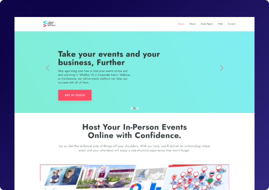

MÁS DE 100 EVENTOS HOSPEDADOS PARA 4 MARCAS FARMACÉUTICAS EN UNA PLATAFORMA QUE DISEÑAMOS DESDE CERO: FLUJOS, ARQUITECTURA Y UI COMPLETA
Resultados reales
Diseñamos la arquitectura de información completa del panel de administración: gestión de marcas, creación de eventos, gestión de usuarios y reportes. Una estructura enterprise que le permitió a las compañías farmacéuticas operar de forma autónoma
La plataforma de asistentes (WebinARE) soporta múltiples idiomas y tres tipos de evento simultáneos (webinars, educación online y paneles de discusión), con sistema de registro configurable (simple o complejo) según los requisitos regulatorios de cada marca farmacéutica
VES (Virtual Event Services) es una plataforma enterprise para la industria farmacéutica: permite a compañías como las que comercializan FeraMAX, RepaGyn o Tibella crear, gestionar y transmitir eventos médicos virtuales (webinars, educación online y paneles de discusión) a profesionales de salud en cualquier país e idioma. Con más de 100 eventos hospedados para 4 marcas de productos farmacéuticos distintas, la escala del proyecto fue real desde el primer sprint.
Durante 6 meses diseñamos el sistema completo en dos capas: la experiencia del asistente (la plataforma WebinARE, con registro configurable, soporte multilingüe y visualización de eventos en vivo y bajo demanda) y el panel de administración (donde la compañía farmacéutica gestiona sus marcas, crea y publica eventos, aprueba usuarios y accede a reportes de asistencia). Documentamos 6 escenarios de flujo de usuario, diseñamos 4 roles con experiencias diferenciadas (Registrant, Speaker, Moderator y Organizer) y construimos la arquitectura de información completa del dashboard. Cada decisión de diseño operó dentro de las restricciones reales de la industria farmacéutica: contenido regulado, verificación de identidad de asistentes y requisitos de reporte de asistencia.

Objetivos del proyecto
- Diseñar un sistema multi-marca desde cero: la plataforma tenía que soportar múltiples compañías farmacéuticas con marcas distintas (FeraMAX, RepaGyn, Tibella), cada una con su identidad, sus eventos y sus usuarios, dentro de una arquitectura administrativa unificada
- Mapear y resolver 6 escenarios de usuario distintos: desde el visitante no registrado que quiere entrar a un evento en vivo hasta el viewer registrado que regresa a ver un evento pasado, cada uno con su exploración, registro y experiencia de consumo propios
- Construir la arquitectura del panel de administración enterprise: el dashboard del moderador/organizador tenía que cubrir gestión de marcas, creación de eventos, manejo de usuarios con aprobación, reportes por tipo y período, herramientas de engagement (chat, Q&A, polls, surveys) e integraciones con plataformas de pago
- Cumplir con los requisitos regulatorios de la industria farma: los eventos médicos tienen reglas estrictas sobre quién puede asistir, cómo se verifica la identidad y qué datos de asistencia deben reportarse. El diseño del sistema de registro (simple y complejo) tenía que contemplar ambos modos sin romper la experiencia del usuario
Proceso de diseño


¿Tenés un producto que mejorar
o una idea que validar?
Escribime y coordinamos una llamada de 30 minutos sin costo. Te cuento cómo puedo ayudarte y si tiene sentido trabajar juntos.
Escribime a info@uxuaria.com